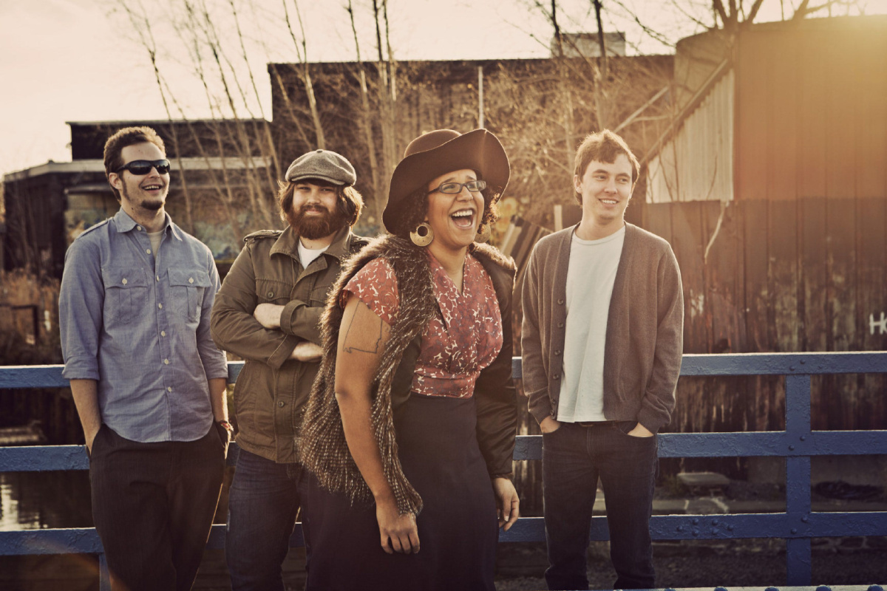

Music
I don't just play music, I like to listen to it as well. I enjoy many musical genres including southern rock, alternative rock, and indie pop. Here are my top bands and favorite songs.
Alabama Shakes

Alabama shakes is a southern rock band wiht a charismatic frontwoman, Brittany Howard. Their albumns are Boys & Girls and Sound & Color. My favorite hits from Alabama Shakes are:
- Rise to the Sun
- Sound and Color
- Future People
- Gimme All Your Love
Børns
Garrette Clark Borns, also known as Børns, is a young indie pop singer from Michigan. He has released two EPs and an album and is set to release another album soon. My favorite songs from him are as follows:
- Faded Heart
- Overnight Sensation
- American Money
- Seeing Stars
Glass Animals
Glass Animals is an indie rock band from England, but their style can been described as psychedelic and pop too. They have released two albums named Zaba and How to be a Human Being. My favorite hits from Glass Animals are:
- Gooey
- Take a Slice
- Hazey
- Black Mambo
Portugal. The Man
It is hard to give a description of Portugal. The Man. They have changed their sound every album, and that's one of the reasons I love them so much. While their most popular song comes from the hit single Feel it Still , they have released 8 albums since 2006, some of which include American Ghetto, Evil Friends , and Woodstock . Here are my top picks from Portugal. The Man:
- So Young
- Got It All
- Smile
- Dead Dog
- Mornings
The Revivalists
The Revivalists are yet another southern rock band that I adore. They blend alternative rocks with roots which combines to make a sinfully stellar sound. Here are my top hits from the band:
- When I'm Able
- BTBD
- Gold to Glass
- Amber
Books
Reading is a fun past time for me. I get to travel to worlds different from ours and meet characters unlike any people I know. I could make and endless list of the many books that I love, but I'll stick with the books that got me into reading, my favorite stand alone books, my favorite series, and my favorite comic books.
My First Books
Here are just a couple of books that started my reading journey. After being exposed to these books, I started seeing reading as a fun pastime as opposed to a chore. Also, the authors of these books have consistently put out great work and I keep up with most of their new stories.
- A to z Mysteries Ron Roy
- Encyclopedia Brown Donald J. Sobol
- Return of the Homework Machine Dan Gutman
- Swindle Gordon Korman
Stand Alone Books
It was actually pretty difficult to find stand alone novels that I have read since everything needs a sequel these days. * sigh * But here are some great books that did not have a sequel at the time I was writing this.
- Cell Stephen King
- Misery Stephen King
- Schooled Gordon Korman
- Ungifted Gordon Korman
Books Series
The following list contains a wide range of stories, but all have left me with a satisfied feeling. From vampires to Egyptian demigods, these series have taken me on great adventures. I've even read a few of them twice.
- Cirque du Freak Darren Shan
- Genius Files Dan Gutman
- Magnificent 12 Michael Grant
- The Kane Chronicles Rick Riordan
Comic Books
I have only recently got into reading comic books, but I sure am glad that I did. You can get as compelling of a story from a comic as you can from a regular novel, plus you get amazing graphics to go along with the story. My favorite comic book author is Brian K. Vaughan. It took all my will power not to list every comic of his I have read.
- Saga Brian K Vaughan
- Y: The Last Man Brian K Vaughan
- Locke and Key Joe Hill
- Lumberjanes Grace Ellis; Shannon Watters